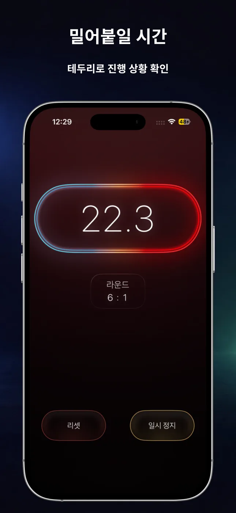
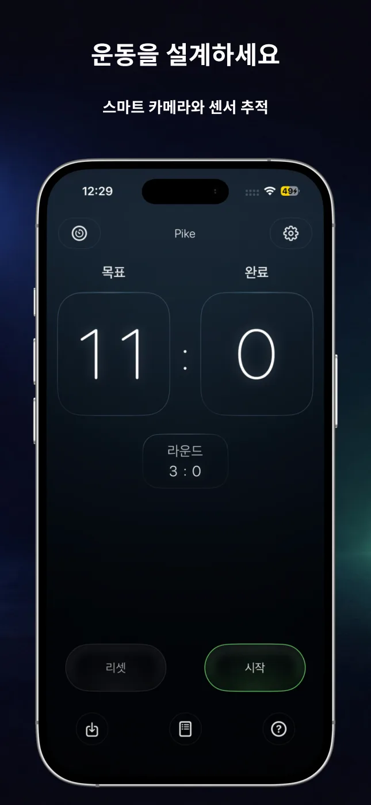
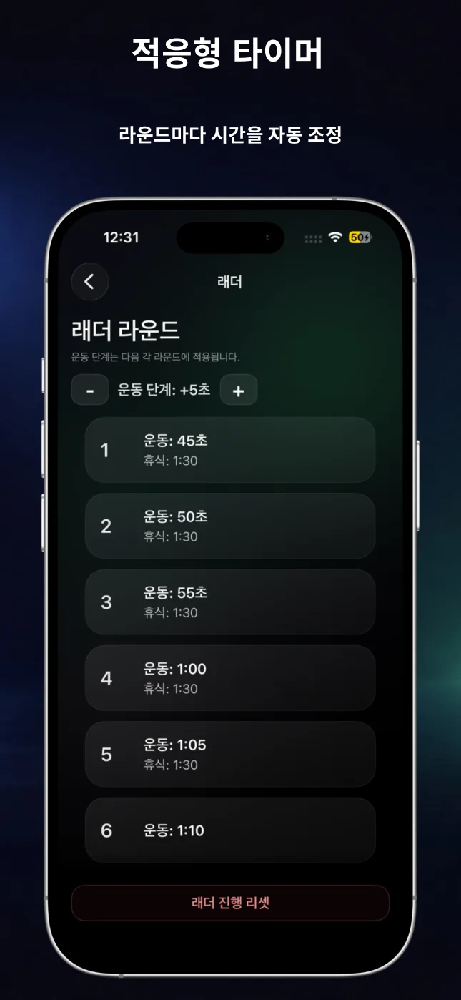
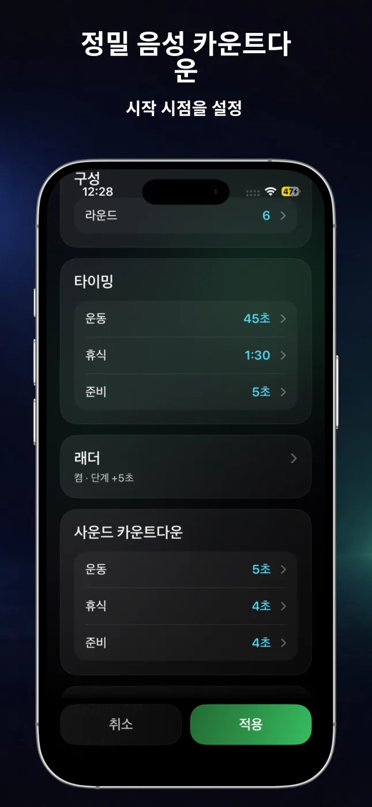
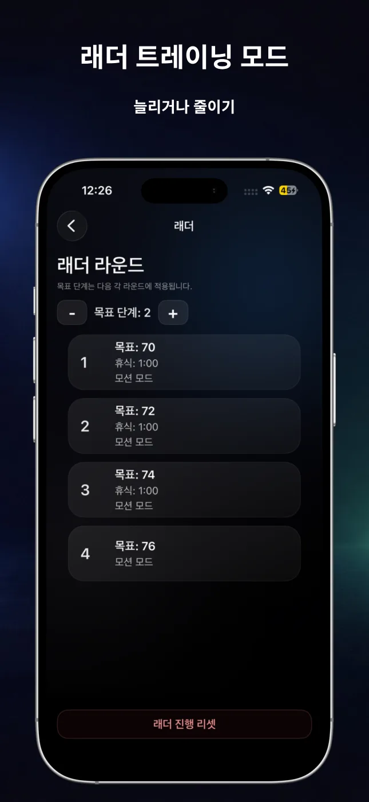
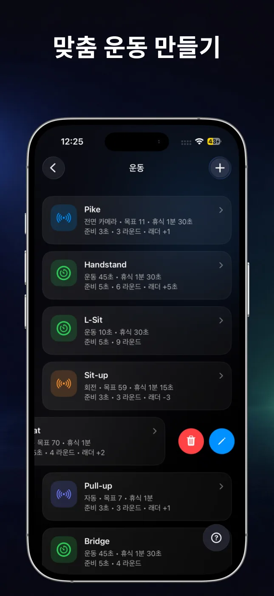

자동 반복 횟수 측정
동작, 회전, 자동 감지 또는 전면 카메라를 사용해 지원되는 운동의 반복 횟수를 측정할 수 있습니다.
RepChime은 정밀한 인터벌 타이머와 자동 반복 횟수 측정을 하나로 결합합니다. 운동을 설정하고 움직이기 시작하면 iPhone이 리듬을 관리합니다.

시간 기준 운동이든 목표 횟수 운동이든 RepChime은 운동 구조를 선명하게 보여주고 조작을 간단하게 유지합니다.
동작, 회전, 자동 감지 또는 전면 카메라를 사용해 지원되는 운동의 반복 횟수를 측정할 수 있습니다.
운동, 휴식, 준비 시간과 라운드를 설정해 짧은 서킷부터 긴 홀드까지 구성할 수 있습니다.
라운드마다 시간과 목표 횟수를 늘리거나 줄여 단계적인 운동 세션을 만들 수 있습니다.
카운트다운 소리, 라운드 알림, RepChime Pro의 선택형 음성 안내로 화면을 보지 않고 운동에 집중하세요.
타이머와 카운터 설정을 저장하고 즐겨 찾는 운동을 몇 번의 탭으로 시작할 수 있습니다.
앱으로 돌아오면 RepChime Pro가 경과 시간을 기준으로 시간제 구간을 다시 계산합니다. 예약된 iOS 알림으로 구간 변경을 알릴 수 있지만 앱이 백그라운드에서 계속 실행되는 것은 아닙니다.
큰 숫자, 명확한 단계, 어두운 인터페이스로 세트 사이와 멀리서도 쉽게 읽을 수 있습니다.





두 모드 모두 과정은 간단합니다. 세션을 설정하고 시작을 누른 뒤 화면과 소리의 리듬을 따라가세요.
운동, 휴식, 준비 시간을 각각 설정하여 HIIT, 스트레칭 또는 홀드 세션을 만드세요. 라운드, 소리 카운트다운, 시간 래더도 추가할 수 있습니다.
목표를 설정하고 동작, 회전, 자동 또는 전면 카메라 감지를 선택하세요. 푸시업, 윗몸일으키기, 풀업, 스쿼트를 지원합니다.
설정 가능한 HIIT 타이머와 iPhone 센서 또는 전면 카메라로 지원되는 운동의 횟수를 측정할 수 있는 목표 기반 카운터를 제공하는 피트니스 앱입니다.
푸시업, 윗몸일으키기, 풀업, 스쿼트를 지원합니다. 사용할 수 있는 감지 방식은 운동에 따라 다르며, 전면 카메라는 푸시업에 사용할 수 있습니다.
네. 타이머와 카운터 프리셋을 저장할 수 있습니다. RepChime Pro는 더 많은 프리셋과 전체 편집 기능을 제공합니다.
아니요. 운동 프리셋과 설정은 기기에 저장되도록 설계되었습니다. App Store 구매는 Apple에서 처리합니다.